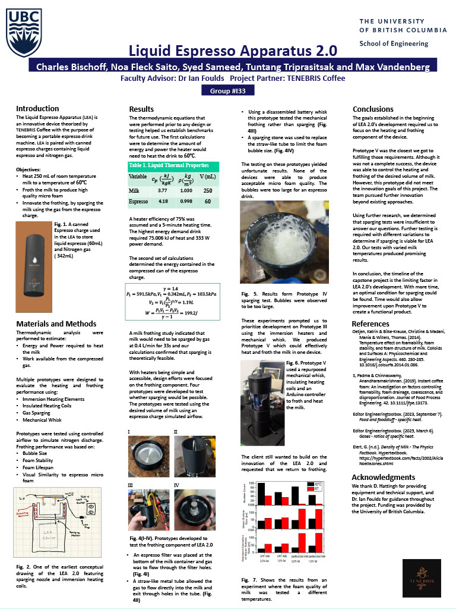

A portable milk heating and frothing device designed for Tenebris Coffee, from nitrogen-based sparging experiments to a working electric whisk prototype.
Tenebris Coffee, a Kelowna craft coffee company, wanted to bring a café experience to travellers. Their vision: a portable device that heats and froths milk, designed to pair with their canned nitrogen espresso charges. The device needed to eliminate the need for external cups or disposable cartridges, and had to be compact enough to fit in a backpack.
Our team of five took this from a theory and through material research, nitrogen sparging experiments, and multiple frother prototypes, we were able to build a working proof-of-concept. (A 320W resistive heater paired with a 5V DC whisk motor, controlled by an Arduino, housed in a custom 3D-printed PLA enclosure around a stainless steel milk cup.)
Fig 1. System architecture — LEA 2.0 components and control scheme
A concise overview of the LEA 2.0 system, design process, and final performance results as presented during the capstone showcase.

Fig X. Capstone project poster — LEA 2.0 system overview and results
Existing portable milk frothers either sacrifice consistency for size, or require professional grade steam equipment. Tenebris needed a solution matching their brand quality.
The initial scope required using nitrogen gas from their pressurized espresso cans to froth the milk, an exciting but also a demanding requirement that ultimately drove our entire iterative design process.
Our process did not follow a linear path. Each client meeting brought new insights, test data, and sometimes a complete direction change. This iterative process shaped our final solution.
Defined project boundaries, identified heating and frothing as two independent subsystems. Mapped three frothing approaches.
Scope lockedCompared resistive heating vs. induction. Evaluated whisk motor, planetary gear, French press, and nitrogen sparging for frothing.
Short-list generatedBuilt Prototype 5 (electric whisk + AC heater). Ran initial nitrogen sparging tests. Foam quality from nitrogen was insufficient.
Pivot triggeredClient's advisor requested we abandon all prototypes. Client later insisted nitrogen frothing must remain the goal.
Re-scope to researchLiterature review on milk foam science. Tested sparging wand vs. stone at 45–90°C and 2–6.3 L/min. Nitrogen ruled out at available pressures.
Nitrogen ruled outElectric whisk re-adopted. Refined prototype with stainless steel cup, external heater placement, O-ring sealed lid.
Design finalizedFinal prototype tested against all evaluation criteria. Heating, foam quality, stability, and safety benchmarks documented.
Prototype validated| Method | Foam Quality | Energy Req. | Cost | Portability | Verdict |
|---|---|---|---|---|---|
| Planetary Gear Whisk | High | Mechanical only | High (machined gears) | Moderate | Rejected |
| French Press | High (with skill) | Mechanical only | Low | High | Rejected |
| Electric DC Whisk | Good (2–3mm bubbles) | 5V DC (low) | Low | Good | Selected |
| Nitrogen Sparging | Excellent (theory) | 120 psi N₂ required | Very High | Low | Ruled Out |
The final prototype is a cylindrical device (12×28cm) with four main subsystems: a stainless steel milk container, a PLA 3D-printed outer housing and lid, a resistive heating element, and a DC frother motor with Arduino controller.
A critical design insight came from earlier iterations where internal heater placement caused milk to burn onto the element. The final design places the heater on the exterior bottom surface of the stainless cup, eliminating direct milk contact while maintaining efficient heat transfer.
Supervised by Dr. Alon Eisenstein & Dr. Kenneth Chau · UBC School of Engineering
Fig 2. Exploded component diagram — LEA 2.0
The prototype was tested against all six evaluation criteria and five design requirements. Core engineering targets were met or exceeded. Other aspects of the project that require it be consumer ready (battery, food-safe materials) remain for a future iterations and are outlined in future directions.
This project taught me that client requirements can change and as a design team working for the client, we need to be able to adapt and change. Our scope shifted three times -> from nitrogen sparging prototype, to research only mode, back to a functioning device. Navigating these pivots without bactracking or greatly extending project timeline was a challenge that we had to overcome as a deisgn team.
We also learned that foam science resists calculation. Unlike heating, which we could model precisely, foam formation depended on milk protein concentration, fat content, temperature, and bubble dynamics in ways only experimental testing could model accurately. The nitrogen frothing hypothesis was mathematically sound but physically constrained by available can pressure.